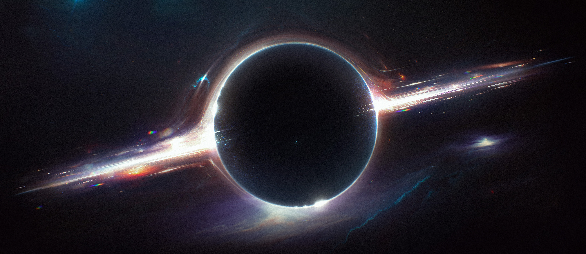

BEM VINDO
Beyond the Horizon (BTH) é um framework design para Tabletop Role-Playing Games (TTRPGs).
Como ler esta Wiki?
Esta página contém informações gerais sobre o jogo; como objetivos, breve explicação do universo, espécies jogáveis, temas abordados e ferramentas necessárias para o jogo.
No Manuscrito, você encontra informações sobre todas as mecânicas e regras bases para um jogo de BTH.
Na Força Galáctica, a espécie jogável Humano é apresentada, explicando todas as mecânicas necessárias para você assumir a pele de um.
Universo
Vasto, cheio de vida, mistérios e perigos; assim é o universo em BTH. Você pode passar sua aventura toda em um mesmo planeta, vivendo entre membros da sua própria espécie e criaturas irracionais, ou pode explorar o universo inteiro com seus planetas, galáxias e setores; e interagir com as mais diversas espécies racionais e irracionais.
Regentes do Universo e Caos
O universo é regido por três forças: Expansão, Ordem e Colapso. Algumas espécies e culturas consideram essas forças como entidades, deuses até. Estas três forças são responsáveis por manipular o Caos e regir o mundo que conhecemos.
Caos é matéria, energia, força, tudo e todos. Expansão é responsável por capturar o Caos de seu plano e trazer para o nosso. Ordem forja o Caos a imagem que desejar. Colapso o desintegra e recicla-o novamente para seu plano, fechando assim, o ciclo.
Espécies
Como dito anteriormente, o universo é cheio de vida. Espécies, jogáveis ou não, vivem e circulam nos mais diferentes biomas e ambientes.
Cada espécie jogável é apresentada através de módulos (Humanos podem ser encontrados em Força Galáctica). Nestes módulos você encontrará informações sobre as características mecânicas, comportamentais e sociais de cada espécie.
Sistema de Magia
Criaturas, incluindo personagens jogáveis (PCs), objetos e outros fenômenos da natureza, podem ter acesso limitado ao Caos, e força suficiente para manipulá-lo à sua vontade.
Tecnologia
A tecnologia depende do módulo e espécie que você decide jogar. Enquanto Humanos possuem acesso a alta tecnologia, outras espécies - como os Evoras - não fazem uso de tecnologia alguma.
Módulos
Enquanto no Manuscrito você encontra as mecânicas e regras bases para jogar BTH, detalhes do mundo e espécies são encontradas em módulos separados. Quando você e seus amigos decidirem começar um jogo, o primeiro passo é a decisão do módulo que desejarão jogar.
Abaixo você encontra um planejamento do futuro de BTH, porém para este play teste, somente os Humanos (A.N.E) estão disponíveis para jogo.
| Espécie | Características | Módulo |
|---|---|---|
| Humanos (Ordinário) | Humanos ordinários vivendo sua vida no espaço em outra galáxia. | Força Galáctica |
| Humanos (A.N.E.) | Humanos que fazem uso da Armadura Nano Evolutiva. | Força Galáctica |
| Hiver | Humanos que abandonaram sua origem para viver em simbiose com o ambiente. | Simbiose |
| Symbion | Fungus que vive em simbionte com outras criaturas orgânicas. | Simbiose |
| Evoras | Inseto em constante evolução e mutação. | Evolução |
| Realshir | Elemental em busca de aperfeiçoamento de todos os elementos. | Evolução |
| Kitsuzen | Pequeno humanoid com aparência de raposa. Sua cultura lembra a asiática. | Arte e Corpo |
| Egon | Mistura entre lobo e lagarto que usa párticulas como areia, neve, etc. | Arte e Corpo |
| Sanguine | Humanos na Terra e que possuem poderes baseados na cor de seu sangue. | Nova Velha Terra |
| Cy_mera | Humanos que lembram Cyberpunks. | Nova Velha Terra |
| Mistique | Humanos que fazem uso de tatuagens mágicas baseadas em misticismos. | Nova Velha Terra |
Jogadores e Game Master (GM)
Todo jogador, exceto um, assume o papel de um personagem jogável (PC). Você poderá ser um Humano Cientista ou Soldado, um Evoras Aracnídeo, um Egon do Deserto, ou diversas outras criaturas.
Cabe a você imaginar e interpretar seu PC. Cada espécie tem suas peculariedades de cultura e personalidade, você encontra informações que lhe ajudam a interpretar um membro da espécie escolhida em cada módulo.
Os personagens de jogadores são sempre os protagonistas das aventuras. O jogo é sobre você, sobre suas decisões, sua história.
O jogador restante é o Game Master (GM). Ele é responsável por narrar o mundo e a história. É responsável por desafiar a equipe de jogadores; seja colocando impencilhos no caminho ou atacando com monstros. Criaturas controladas pelo GM são chamadas de personagens não jogáveis (NPCs).
É trabalho do GM colocar obstáculos e desafios para os PCs, forçando eles a pensar com cuidado, mas ao mesmo tempo, tomar decisões rápidas. Não é trabalho do GM tomar decisões ou realizar ações pelos PCs, ele não possui controle sobre eles.
O GM descreve os resultados e consequências das ações dos PCs, mas o que acontece de fato no jogo, é decidido durante ele.
O Jogo
O jogo é uma conversação entre os jogadores e o GM, um bate e volta de narrativa. O GM descreve o que está presente e acontece em volta dos PCs, os jogadores descrevem como desejam reagir, o GM narra as consequências e resultados. Se uma situação crítica - como um combate - aparece, é hora de começar a rolar dados - veja mais em Checks.
Modos de Jogo
Você pode escolher entre dois modos de jogo: One Shot e Aventura.
One Shot é uma aventura de uma sessão apenas, com duração de 3 a 5 horas de jogo. Neste modo a narrativa é mais cinemática e envolve menos complexidade.
Aventura é uma campanha planejada para rodar entre 12 a 15 sessões, onde os PCs alcançarão nível máximo: 5. Este modo envolve uma trama bem mais complexa, com diversos finais possíveis. Também valoriza o desenvolvimento de personagem.
Temas
Os temas variam entre os módulos e as espécies, alguns podendo focar mais em ficção científica (sci-fi) e terror, enquanto outros podem focar mais em exploração e fantasia. Abaixo você encontra os temas chaves que podem ser encontrados em abundância pelas aventuras.
Exploração e "Sense of Wonder"
Curiosidade, mistério e perguntas assombram a mente de qualquer criatura. O universo está cheio destes mistérios, e também - com sorte - suas respostas. Explore mundos, encontre artefatos incompreensíveis e de escala gigante, faça contato com organismos de complexidade inesplicáveis; descubra, se surpreenda.
Sci-fi
Ficção Científica é o carro chefe de BTH. Utilize de todas as ferramentas ao seu alcance, toda a capacidade da sua espécie, para enfrentar os perigos do espaço.
Fantasia
O Caos e algumas espécies trazem uma pitada de fantasia ao mundo de BTH, fazendo algumas ações, habilidades e fenômenos parecerem mágica. Mas não deixe-se enganar, o universo é regido por forças e leis rígidas.
Terror
No espaço o perigo é constante, e com o perigo vem o terror. Seja um fenômeno inexplicável ou uma criatura hostil e horrenda, os PCs estarão sempre a mercê do medo. Não importa se você seja um simples Humano ou um predador nato de aparência assustadora como um Evoras, sempre há algum perigo a espreita, esperando o momento mais oportuno para acabar com sua vida; ou sanidade. Com a mecânica de Stress e Pânico isso se torna mais do que claro - veja mais em Stress e Pânico.
Ação
Uma aventura não seria uma boa aventura sem ação. BTH é repleto de ação. Seja fugindo de um vulcão em erupção, correndo por sua vida de um monstro - ou, até mesmo, combatendo-o - a ação é garantida.
Estratégia
Assim como o espaço, o jogo não pensa duas vezes antes de te punir. Os recursos são poucos e os perigos muitos. Você deve pensar bastante sobre seu posicionamento no mapa. Deve observar com atenção seus inimigos e, administrar bem seus recursos e ações se quiser sobreviver no mundo - e combate - de BTH.
Ferramentas de Jogo
Para jogar este jogo, você precisa das seguintes ferramentas:
- Ficha de Personagem
- 1 a 3 conjuntos de dados (d6 a d12)
- Tokens para Ação, Reação e Terror
- Cartas de Ações/Reações, Habilidades, Equipamentos e Companions